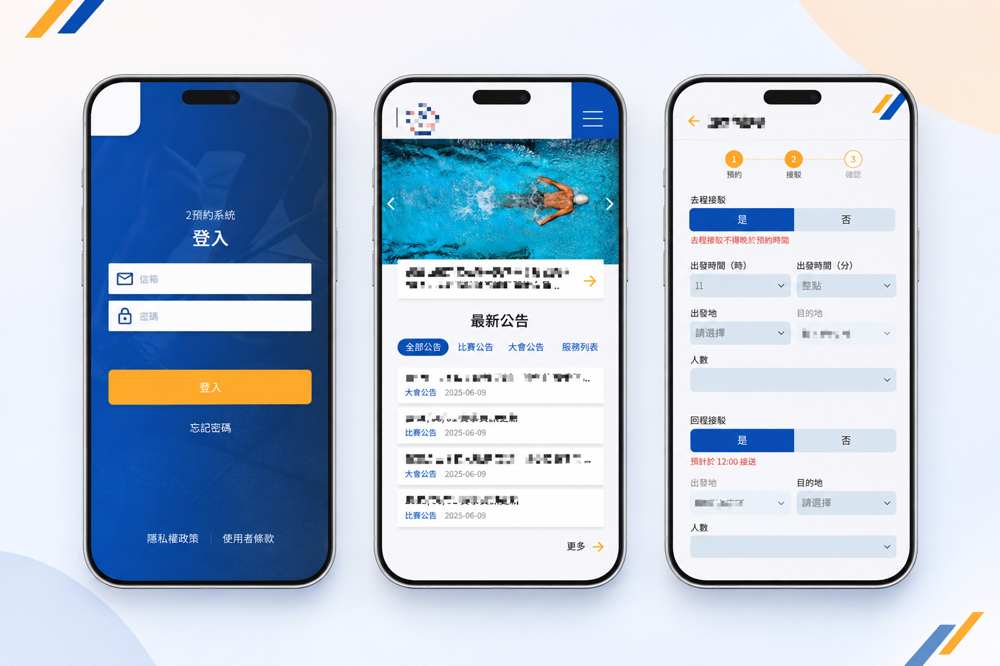
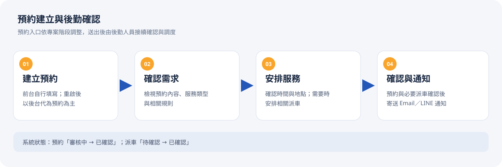
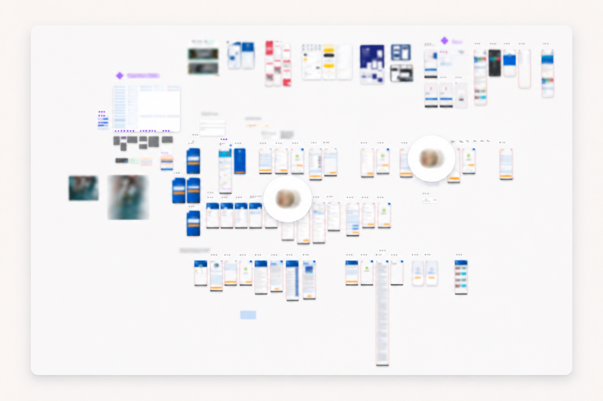
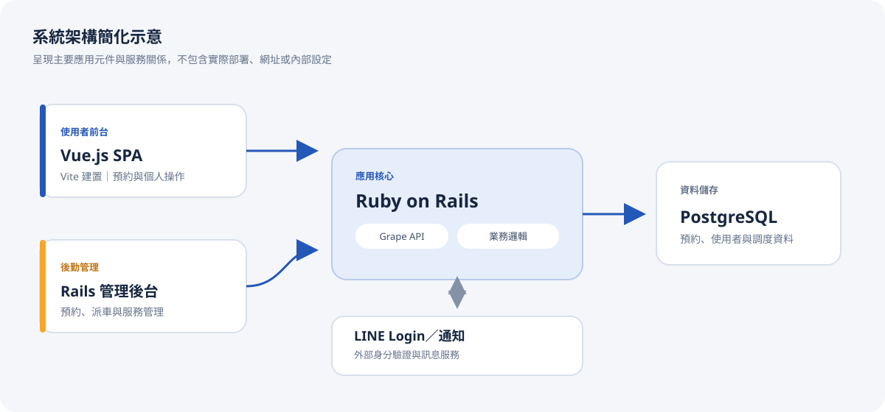

Overview
為國家級運動賽事建立後勤預約與調度系統，讓選手與教練透過前台提出服務預約，後勤人員則可在後台管理預約與安排資源。
我參與專案兩個階段：第一階段負責需求釐清、流程與介面設計、資料架構討論及前端開發；專案暫停後重啟，第二階段主要負責前後端實作，並配合需求調整流程與整合 LINE Login。

專案問題
預約流程包含多個步驟，並需支援手機操作；後台也需協助不同業務人員管理預約與調度。需求來自多位負責不同業務的客戶窗口，內容分散且會變動。
專案重啟後，部分原由使用者在前台操作的流程，改為由後台人員代為預約。

專案目標
- 讓選手與教練透過手機完成後勤服務預約。
- 讓後勤人員透過後台管理預約與調度。
- 將不同業務人員提出的需求整理成一致的流程與系統規則。
- 保留調整空間，以因應專案重啟後的流程變動。
- 整合 LINE Login。
我的工作與合作方式
第一階段：需求釐清與前端交付
業務帶回需求後，我持續提問、確認使用情境與規則，直到掌握系統全貌，再整理操作流程、泳道圖和角色權限。接著和團隊討論並對齊資料架構，完成介面設計與前端工程。

第二階段：重啟後的前後端開發
專案暫停一段時間後重啟。我主要負責前後端實作，依客戶後續需求調整預約流程，並整合 LINE Login。
關鍵設計與技術決策
- 團隊採用 Vue 建置前端，以支援多步驟預約流程；這也是我首次參與 Vue 實務開發，過程中透過文件、實作、測試和資深工程師的架構指導逐步熟悉。
- 以手機操作為主要設計情境，先盤點各步驟需要的資訊與規則，再和 PM 團隊對齊。
- 專案重啟後，依客戶需求調整部分預約流程。
- 整合 LINE Login 作為系統登入方式。

成果
- 完成前台預約與後台管理系統的階段性交付。
- 專案重啟後依客戶需求調整預約流程。
- 完成 LINE Login 整合。
反思
這個專案讓我從需求釐清、流程與權限設計一路參與到前端實作，並在專案重啟後承接主要的前後端開發。先讓團隊對使用情境、流程和資料架構建立共識，能讓後續設計與開發更有依據；作業方式改變時，也能以已整理的流程和系統結構為基礎，判斷需要調整的部分。